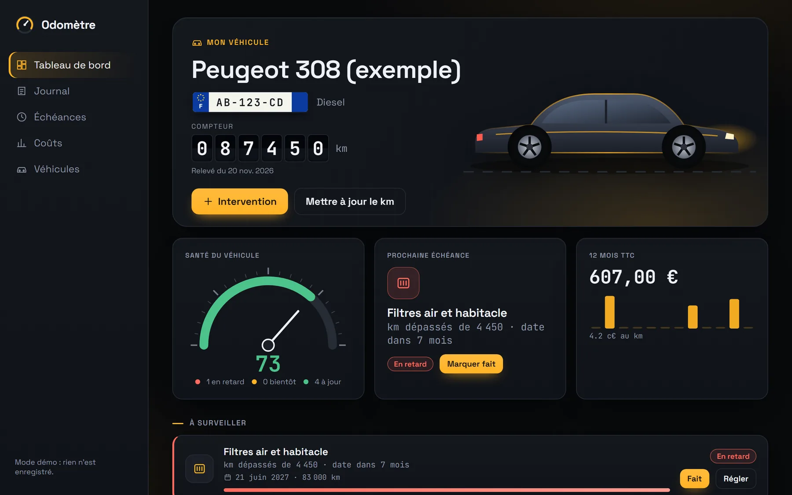
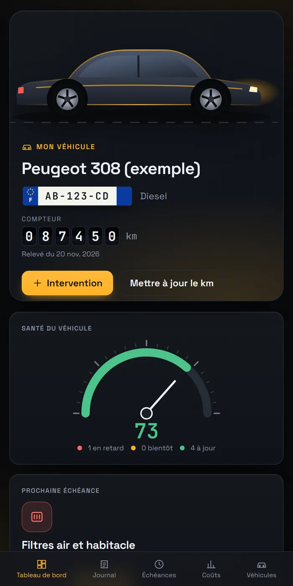
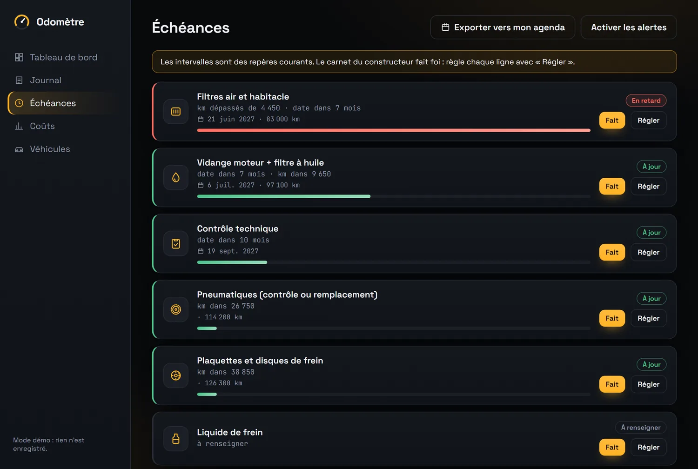
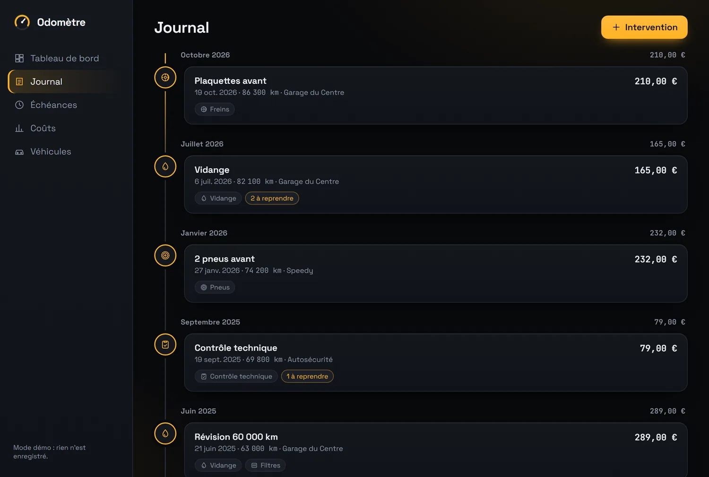
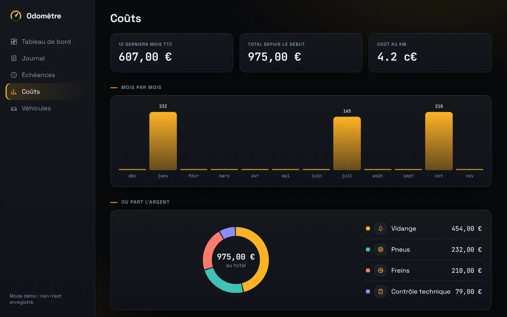
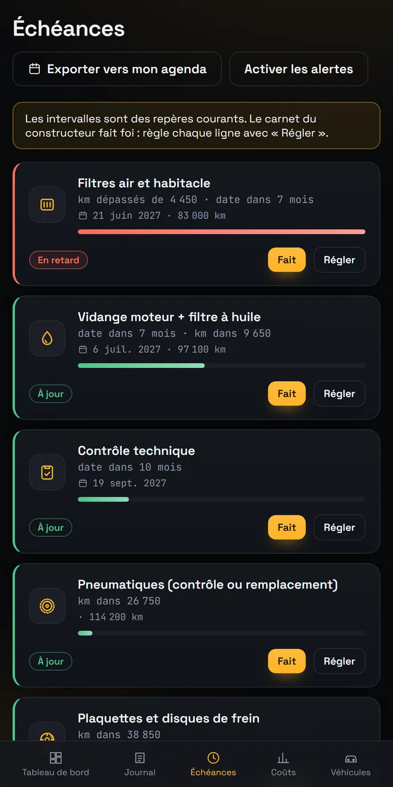

L'idée
Un carnet qui dit quoi faire ensuite.
La plupart des carnets racontent le passé. Odomètre regarde devant : dans combien de temps, en kilomètres et en mois, et ce que tu as laissé de côté la dernière fois.
Échéances, factures, ce qui reste à faire : tout au même endroit, sur ton téléphone et ton ordinateur. Le carnet calcule, tu roules.


Dans la boîte à gants, sous les cartes routières. Et personne ne le relit avant la révision.
Il est parfait le premier week-end. Au deuxième mois, plus personne ne le met à jour.
Dans un tiroir ou au fond d'une galerie photo. Introuvables le jour où tu en as besoin.
La plupart des carnets racontent le passé. Odomètre regarde devant : dans combien de temps, en kilomètres et en mois, et ce que tu as laissé de côté la dernière fois.
Vidange, filtres, freins, pneus, distribution, contrôle technique : chaque ligne affiche son échéance et son niveau d'urgence.

Une frise claire de toutes les interventions, avec la photo ou le PDF de la facture, et les points à reprendre.

Les dépenses sur douze mois, la répartition par type de travaux et le coût au kilomètre.

Ouvre l'adresse dans ton navigateur, ajoute-la à l'écran d'accueil. C'est tout.

Le carnet est enregistré dans ton navigateur. Rien n'est envoyé sur un serveur.
Pas d'inscription, pas de mot de passe. Une clé d'accès suffit.
Aucun traceur, aucune publicité, aucun script tiers.
Une semaine d'essai gratuit, puis le prix qui te convient.
Résiliable à tout moment.
Soit moins de 7 € par mois.
L'abonnement ouvre très bientôt. En attendant, essaie la démo gratuite : rien à installer, rien à créer.
Dans le navigateur de ton téléphone, ta tablette ou ton ordinateur (Chrome, Safari, Edge, Firefox récents). Tu peux l'ajouter à l'écran d'accueil comme une application.
Exporte une sauvegarde depuis l'écran Véhicules, importe-la sur le nouvel appareil. Pense à en faire une de temps en temps.
Non. Elles restent dans ton navigateur. La seule vérification en ligne est celle de ta clé d'accès.
Ce sont des repères courants. Le carnet de ton constructeur fait foi : tu règles chaque ligne. Aucun résultat n'est garanti.
Oui, à tout moment depuis ton reçu Gumroad. L'accès court jusqu'à la fin de la période payée.
La démo est gratuite et pleine de données d'exemple.